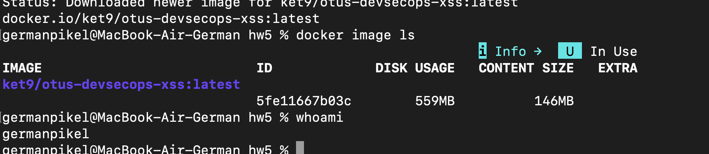
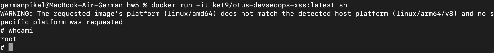
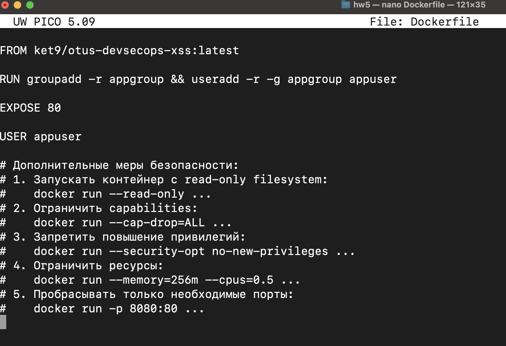
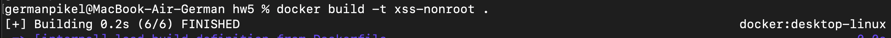
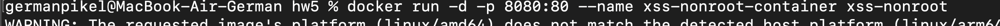
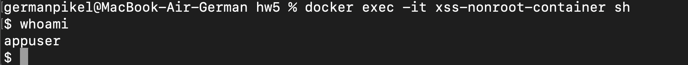
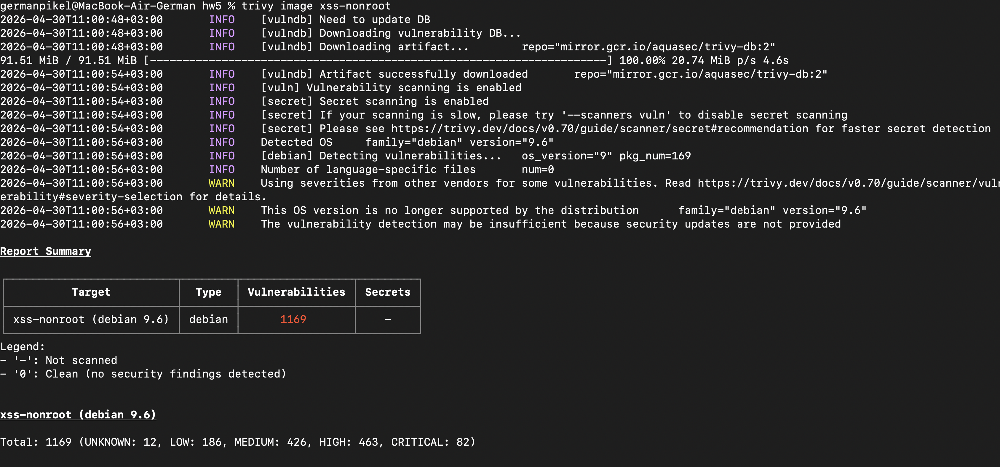
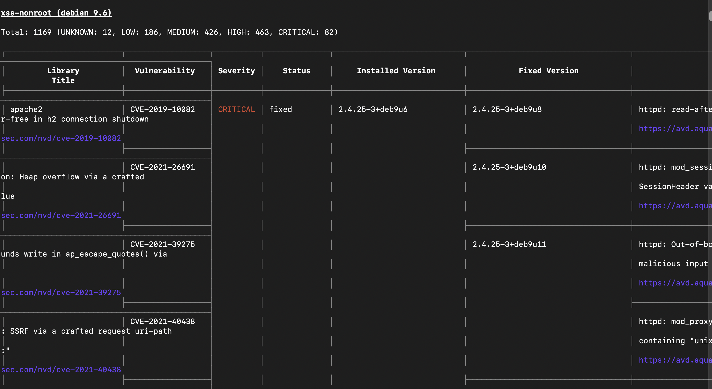

Я решил скачать докер-образ из 3-ей лабы про XSS-атаки:
docker pull ket9/otus-devsecops-xss:latest
С помощью команды docker images ls посмотрел все установленные у меня образы у меня на машине, также использовал команду whomai:

Затем я запустил командную оболочку sh внутри выбранного контейнера с помощью команды docker run -it ket9/otus-devsecops-xss:latest sh и вот какой вывод получил:

Вот простейший Dockerfile, который я написал для выполнения этой части лабораторной работы. Также добавил коментарии с тем, какие настройки безопасности можно добавить в докер контейнер и с какими флагами его можно запускать:

Собрал новый образ, запустил его и ввел в командную строку внутри контейнера whoami:



Установил trivy через brew install trivy.
Запустил сканирование с помощью команды trivy image xss-nonroot и вот что получил:


Как мы видим, слишком много уязвимостей в моем образе, их 1169. 82 критические уязвимости, 463 - серьезные, 426 - средние, 186 - некритические, и 12 пока не известных. Думаю, основная проблема наличия стольких ошибок - устаревший образ.